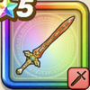

くさなぎのけん
攻略班 8.0点 / ドラゴン斬りブレードガード剣気活性地を疾る蒼光天岩招来神器の天恵
くわしい特徴
【レベル別習得スキル】 Lv1【バトマス】攻撃力+5 Lv1ドラゴン斬り（消費MP：5）ドラゴン系に威力200%それ以外の系統には130%の斬撃ダメージを与える Lv10ブレードガード（消費MP：7）自身のガード率を1段階上げる Lv15剣気活性（消費MP：18）自分のこうげき力を1段階上げ、HPを一定量回復する Lv20地を疾る蒼光（消費MP：28）敵全体に威力380%の斬撃ダメージを与え、たまに守備力を1段階下げ、ごくまれに守備力を2段階下げる Lv30天岩招来（消費MP：34）敵1体に威力510%のジバリア属性斬撃ダメージを与え、行動時に発動し威力150%のメラ属性斬撃ダメージを与えるトラップをまれに設置する Lv35ドラゴン系へのダメージ+5% Lv40守備減成功率+10% Lv45攻撃力+12 Lv50神器の天恵（消費MP：16）戦闘開始時に自動で悪い状態変化とすべての状態異常を防ぎ、斬撃・体技ダメージがガードやみかわしされなくなる(効果3ターン) 【限界突破スキル】 1凸スキルの斬撃・体技ダメージ+5% 2凸スキルの斬撃・体技ダメージ+5% 3凸スキルの斬撃・体技ダメージ+5% 4凸スキルの斬撃・体技ダメージ+5%